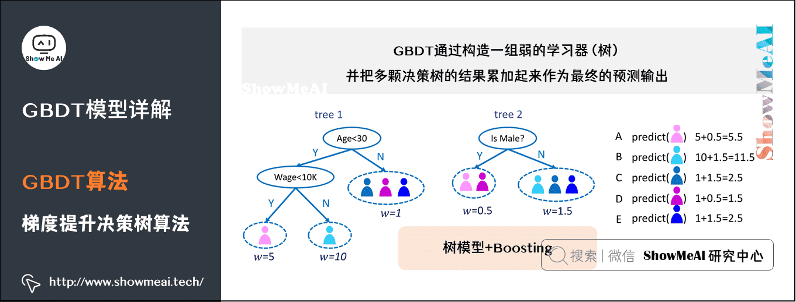
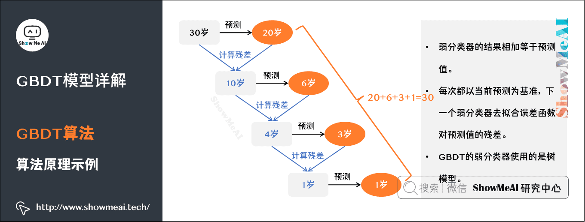

GBDT
GBDT
GBDT：梯度提升决策树
通过构造一组弱的学习器（树），并把多颗决策树的结果累加起来作为最终的预测输出。该算法将决策树与集成思想进行了有效的结合。

（1）boosting的思想
Boosting方法训练基分类器时采用串行的方式，各个基分类器之间有依赖。它的基本思路是将基分类器层层叠加，每一层在训练的时候，对前一层基分类器分错的样本，给予更高的权重。测试时，根据各层分类器的结果的加权得到最终结果。

（2）GBDT原理
- 所有弱分类器的结果相加等于预测值。
- 每次都以当前预测为基准，下一个弱分类器去拟合误差函数（上一次的误差值）对预测值的残差（预测值与真实值之间的误差）。
- GBDT的弱分类器使用的是树模型（第一张图）。

用GBDT去预测年龄：
第一个弱分类器（第一棵树）预测一个年龄（如20岁），计算发现误差有10岁；
第二棵树预测拟合残差，预测值6，计算发现差距还有4岁；
第三棵树继续预测拟合残差，预测值3，发现差距只有1岁了；
第四课树用1岁拟合剩下的残差，完成。
最终，四棵树的结论加起来，得到30岁这个标注答案（实际工程实现里，GBDT是计算负梯度，用负梯度近似残差）。

（3）GBDT训练过程
假定训练集只有4个人 (A,B,C,D)，他们的年龄分别是 (14,16,24,26)。其中，A、B分别是高一和高三学生；C、D分别是应届毕业生和工作两年的员工。
我们先看看用回归树来训练，得到的结果如下图所示：

接下来改用GBDT来训练。由于样本数据少，我们限定叶子节点最多为2（即每棵树都只有一个分枝），并且限定树的棵树为2。最终训练得到的结果如下图所示：

上图中的树很好理解：A、B年龄较为相近，C、D年龄较为相近，被分为左右两支，每支用平均年龄作为预测值。
我们计算残差（即「实际值」-「预测值」），所以A的残差14-15=-1。
这里A的「预测值」是指前面所有树预测结果累加的和，在当前情形下前序只有一棵树，所以直接是15，其他多树的复杂场景下需要累加计算作为A的预测值。

上图中的树就是残差学习的过程了
把A、B、C、D的值换作残差-1、1、-1、1，再构建一棵树学习，这棵树只有两个值1和-1，直接分成两个节点：A、C在左边，B、D在右边。
这棵树学习残差，在我们当前这个简单的场景下，已经能保证预测值和实际值（上一轮残差）相等了。
我们把这棵树的预测值累加到第一棵树上的预测结果上，就能得到真实年龄，这个简单例子中每个人都完美匹配，得到了真实的预测值。

最终的预测过程是这样的：
A：高一学生，购物较少，经常问学长问题，真实年龄14岁，预测年龄A = 15 – 1 = 14
B：高三学生，购物较少，经常被学弟提问，真实年龄16岁，预测年龄B = 15 + 1 = 16
C：应届毕业生，购物较多，经常问学长问题，真实年龄24岁，预测年龄C = 25 – 1 = 24
D：工作两年员工，购物较多，经常被学弟提问，真实年龄26岁，预测年龄D = 25 + 1 = 26
综上，GBDT需要将多棵树的得分累加得到最终的预测得分，且每轮迭代，都是在现有树的基础上，增加一棵新的树去拟合前面树的预测值与真实值之间的残差。
梯度提升 VS 梯度下降
梯度提升：是在函数空间里更新
梯度下降：是在参数空间里更新

GBDT的优缺点

GBDT方法：LightGBM
GBDT在每一次迭代的时候，都需要遍历整个训练数据多次。如果把整个训练数据装进内存则会限制训练数据的大小；如果不装进内存，反复地读写训练数据又会消耗非常大的时间
LightGBM的设计初衷就是提供一个快速高效、低内存占用、高准确度、支持并行和大规模数据处理的数据科学工具
重要特点：优化准确率，使用leaf-wise生长方式，可以处理分类变量
（1）XGBoost的缺点
XGBoost的基本思想
- 首先，对所有特征都按照特征的数值进行预排序。
- 其次，在遍历分割点的时候用O(#data)的代价找到一个特征上的最好分割点。
- 最后，在找到一个特征的最好分割点后，将数据分裂成左右子节点。
总结XGBoost：预排序；Level-wise的层级生长策略；特征对梯度的访问是一种随机访问。
这样的预排序算法的优点是能精确地找到分割点。但是缺点也很明显：
首先，空间消耗大。这样的算法需要保存数据的特征值信息，还保存了特征排序的结果（例如，为了后续快速的计算分割点，保存了排序后的索引），这就需要消耗训练数据两倍的内存。
其次，时间上也有较大的开销，在遍历每一个分割点的时候，都需要进行分裂增益的计算，消耗的代价大。
最后，对cache优化不友好。在预排序后，特征对梯度的访问是一种随机访问，并且不同的特征访问的顺序不一样，无法对cache进行优化。同时，在每一层长树的时候，需要随机访问一个行索引到叶子索引的数组，并且不同特征访问的顺序也不一样，也会造成较大的cache miss。
（2）LightGBM
LightGBM：基于Histogram的决策树算法；Leaf-wise的叶子生长策略；Cache命中率优化；直接支持类别特征（categorical Feature）
LightGBM有哪些实现，各有什么区别？
答：gbdt:梯度提升决策树，串行速度慢，容易过拟合；rf：随机森林，并行速度快；dart：训练较慢；goss：容易过拟合。
LightGBM原理：和GBDT及XGBoost类似，都采用损失函数的负梯度作为当前决策树的残差近似值，去拟合新的决策树。
LightGBM树的生长方式是垂直方向的，其他的算法都是水平方向的，也就是说LightGBM生长的是树的叶子，其他的算法生长的是树的层次。
LightGBM选择具有最大误差的树叶进行生长（更改权重思想），当生长同样的树叶，生长叶子的算法可以比基于层的算法减少更多的loss。
不建议在小数据集上使用LightGBM。LightGBM对过拟合很敏感，对于小数据集非常容易过拟合。对于过拟合的解决方法：Leaf-wise之上增加了一个最大深度的限制。
通俗解释：LGB的优化方法是，在保留大梯度（残差大）样本的同时，随机地保留一些小梯度样本，同时放大了小梯度样本带来的信息增益。
这样说起来比较抽象，我们过一遍流程： 首先把样本按照梯度排序，选出梯度最大的a%个样本，然后在剩下小梯度数据中随机选取b%个样本，在计算信息增益的时候，将选出来b%个小梯度样本的信息增益扩大（ 1 - a） / b 倍。这样就会避免对于数据分布的改变。
基于Histogram的决策树算法
直方图算法的基本思想是：先把连续的浮点特征值离散化成K个整数，同时构造一个宽度为K的直方图。在遍历数据的时候，根据离散化后的值作为索引在直方图中累积统计量，当遍历一次数据后，直方图累积了需要的统计量，然后根据直方图的离散值，遍历寻找最优的分割点。
直方图算法优点：内存占用更小，计算代价更小。
Histogram算法找到的分割点并不是很精确，但对最终的精度影响并不是很大，甚至有时候会更好一点。原因是决策树本来就是弱模型，分割点是不是精确并不是太重要；较粗的分割点也有正则化的效果，可以有效地防止过拟合。
差加速：LightGBM另一个优化是Histogram（直方图）做差加速。一个叶子的直方图可以由它的父亲节点的直方图与它兄弟的直方图做差得到，在速度上可以提升一倍。

单边梯度采样算法
GOSS算法从减少样本的角度出发，排除大部分小梯度的样本，仅用剩下的样本计算信息增益，即保留大梯度数据和部分小梯度数据，部分小梯度数据乘以一个系数，使得训练不足的样本得到更多关注
LightGBM的优化
（1）直接支持类别特征
（2）支持高效并行
（3）Cache命中率优化